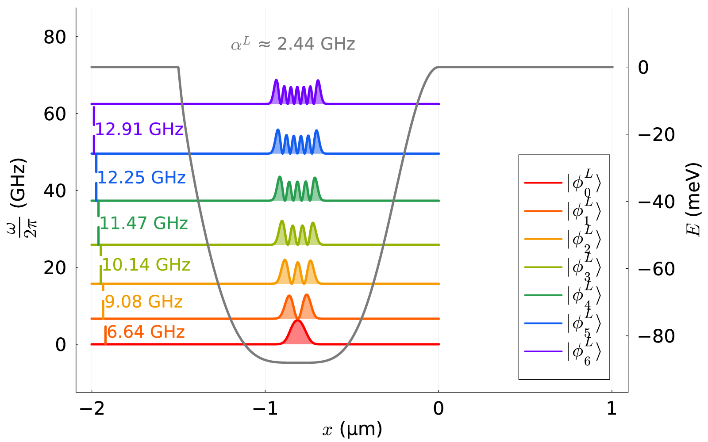

Basis of left well

The energy basis of the left well in configuration I. Note that the
scale differs between the left y-axis, corresponding to the
frequencies of the single-particle eigenstates, and the right y-axis,
which shows the energy of the potential.